Статистика обращений к innoedusys.uz
Статистика обращений к innoedusys.uz
Программа стартовала в вт. 30 июн 2026 18:50.
Анализ обращений к серверу с пн. 9 фев 2026 19:10 по вт. 30 июн 2026 16:33 (140,89 дней).
Статистика обращений к innoedusys.uzПрограмма стартовала в вт. 30 июн 2026 18:50.
Анализ обращений к серверу с пн. 9 фев 2026 19:10 по вт. 30 июн 2026 16:33 (140,89 дней).
(Переход: Вверх | Основная Информация | Статистика по месяцам | Статистика по дням недели | Статистика по времени суток | Статистика по доменам | Статистика по организациям | Статистика по перенаправляющим ссылкам | Статистика отказов по ссылкам | Статистика по ссылающимся сайтам | Статистика по браузерам (подробная) | Статистика по браузерам (суммарная) | Статистика по операционным системам | Статистика по коду возврата | Статистика по размерам файлов | Статистика по типам файлов | Статистика по директориям | Статистика по запросам)
Запись в круглых скобках - данные за 7 дней до 30 июн 2026 18:50.
Успешных обращений: 10 925 (1 704)
Среднее кол. успешных обращений в день: 77 (243)
Успешных обращений к страницам: 645 (22)
Среднее кол. успешных обращений к страницам в день: 4 (3)
Неуспешных запросов: 2 190 (0)
Перенаправленных запросов: 1 340 (6)
Количество запрошенных файлов: 5 185 (5 687)
Количество обслуженных хостов: 844 (1 141)
Данных передано: 127,62 мегабайт (17,08 мегабайт)
Среднее кол. переданных данных в день: 927,54 килобайт (2,44 мегабайт)
(Переход: Вверх | Основная Информация | Статистика по месяцам | Статистика по дням недели | Статистика по времени суток | Статистика по доменам | Статистика по организациям | Статистика по перенаправляющим ссылкам | Статистика отказов по ссылкам | Статистика по ссылающимся сайтам | Статистика по браузерам (подробная) | Статистика по браузерам (суммарная) | Статистика по операционным системам | Статистика по коду возврата | Статистика по размерам файлов | Статистика по типам файлов | Статистика по директориям | Статистика по запросам)
Каждый символ ( ) отображает 15 обращений к страницам или около этого.
) отображает 15 обращений к страницам или около этого.
| месяц | запросы | страниц | |
|---|---|---|---|
| фев 2026 | 1131 | 58 |  |
| мар 2026 | 1482 | 45 |  |
| апр 2026 | 1751 | 54 | |
| мая 2026 | 2049 | 86 | |
| июн 2026 | 4512 | 402 |   |
Наибольшее количество обращений в июн 2026 (402 обращений к страницам).
(Переход: Вверх | Основная Информация | Статистика по месяцам | Статистика по дням недели | Статистика по времени суток | Статистика по доменам | Статистика по организациям | Статистика по перенаправляющим ссылкам | Статистика отказов по ссылкам | Статистика по ссылающимся сайтам | Статистика по браузерам (подробная) | Статистика по браузерам (суммарная) | Статистика по операционным системам | Статистика по коду возврата | Статистика по размерам файлов | Статистика по типам файлов | Статистика по директориям | Статистика по запросам)
Каждый символ () отображает 8 обращений к страницам или около этого.
| день | запросы | страниц | |
|---|---|---|---|
| вс. | 2328 | 299 |  |
| пн. | 1810 | 78 | |
| вт. | 1176 | 49 | |
| ср. | 1880 | 40 | |
| чт. | 1339 | 64 | |
| пт. | 1079 | 36 | |
| сб. | 1313 | 79 | |
(Переход: Вверх | Основная Информация | Статистика по месяцам | Статистика по дням недели | Статистика по времени суток | Статистика по доменам | Статистика по организациям | Статистика по перенаправляющим ссылкам | Статистика отказов по ссылкам | Статистика по ссылающимся сайтам | Статистика по браузерам (подробная) | Статистика по браузерам (суммарная) | Статистика по операционным системам | Статистика по коду возврата | Статистика по размерам файлов | Статистика по типам файлов | Статистика по директориям | Статистика по запросам)
Каждый символ () отображает 6 обращений к страницам или около этого.
| час | запросы | страниц | |
|---|---|---|---|
| 0 | 389 | 5 | |
| 1 | 654 | 44 | |
| 2 | 100 | 4 | |
| 3 | 156 | 2 | |
| 4 | 670 | 1 | |
| 5 | 75 | 5 | |
| 6 | 201 | 3 | |
| 7 | 892 | 17 | |
| 8 | 191 | 10 | |
| 9 | 326 | 11 | |
| 10 | 888 | 222 | |
| 11 | 418 | 48 | |
| 12 | 364 | 2 | |
| 13 | 540 | 18 | |
| 14 | 122 | 10 | |
| 15 | 535 | 13 | |
| 16 | 950 | 66 | |
| 17 | 130 | 11 | |
| 18 | 578 | 29 | |
| 19 | 761 | 59 | |
| 20 | 537 | 29 | |
| 21 | 503 | 14 | |
| 22 | 514 | 18 | |
| 23 | 431 | 4 | |
(Переход: Вверх | Основная Информация | Статистика по месяцам | Статистика по дням недели | Статистика по времени суток | Статистика по доменам | Статистика по организациям | Статистика по перенаправляющим ссылкам | Статистика отказов по ссылкам | Статистика по ссылающимся сайтам | Статистика по браузерам (подробная) | Статистика по браузерам (суммарная) | Статистика по операционным системам | Статистика по коду возврата | Статистика по размерам файлов | Статистика по типам файлов | Статистика по директориям | Статистика по запросам)
Список доменов, отсортировано по суммарному трафику.
| запросы | %байт | домен |
|---|---|---|
| 10925 | 100% | [нераспознанный IP-адрес] |
(Переход: Вверх | Основная Информация | Статистика по месяцам | Статистика по дням недели | Статистика по времени суток | Статистика по доменам | Статистика по организациям | Статистика по перенаправляющим ссылкам | Статистика отказов по ссылкам | Статистика по ссылающимся сайтам | Статистика по браузерам (подробная) | Статистика по браузерам (суммарная) | Статистика по операционным системам | Статистика по коду возврата | Статистика по размерам файлов | Статистика по типам файлов | Статистика по директориям | Статистика по запросам)
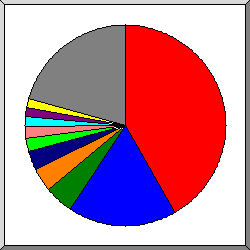
Поделено на сектора по количеству обращений.
 45
45
 20
20
 34
34
 89
89
 4
4
 66.249
66.249
 135.119
135.119
 52
52
 23
23
 93
93
 другое
другое
Показано первые 20 организаций - по количеству обращений, отсортировано по количеству обращений.
| запросы | %байт | организация |
|---|---|---|
| 4564 | 49,06% | 45 |
| 1905 | 15,48% | 20 |
| 495 | 4,14% | 34 |
| 421 | 3,70% | 89 |
| 351 | 3,08% | 4 |
| 226 | 1,83% | 66.249 |
| 202 | 1,78% | 135.119 |
| 172 | 1,53% | 52 |
| 171 | 1,43% | 23 |
| 152 | 1,15% | 93 |
| 150 | 1,33% | 2 |
| 150 | 1,32% | 74 |
| 135 | 1,08% | 35 |
| 116 | 1,11% | 51 |
| 104 | 0,90% | 109 |
| 98 | 0,86% | 172.213 |
| 98 | 0,86% | 158.158 |
| 74 | 0,37% | 138.68 |
| 63 | 0,19% | 216.73 |
| 57 | 0,20% | 192.71 |
| 1221 | 8,61% | [не распознано: 155 организаций] |
(Переход: Вверх | Основная Информация | Статистика по месяцам | Статистика по дням недели | Статистика по времени суток | Статистика по доменам | Статистика по организациям | Статистика по перенаправляющим ссылкам | Статистика отказов по ссылкам | Статистика по ссылающимся сайтам | Статистика по браузерам (подробная) | Статистика по браузерам (суммарная) | Статистика по операционным системам | Статистика по коду возврата | Статистика по размерам файлов | Статистика по типам файлов | Статистика по директориям | Статистика по запросам)
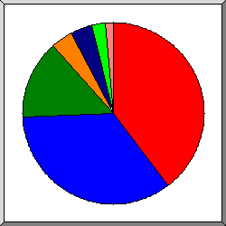
Поделено на сектора количество перенаправленных запросов.
http://innoedusys.uz/
http://www.innoedusys.uz/
http://mail.innoedusys.uz/
http://innoedusys.uz/cgi-sys/suspendedpage.cgi
http://mail.innoedusys.uz/cgi-sys/suspendedpage.cgi
http://www.innoedusys.uz/cgi-sys/suspendedpage.cgi
http://innoedusys.uz/login
Список ссылающихся URLей, отсортировано количество перенаправленных запросов.
(Переход: Вверх | Основная Информация | Статистика по месяцам | Статистика по дням недели | Статистика по времени суток | Статистика по доменам | Статистика по организациям | Статистика по перенаправляющим ссылкам | Статистика отказов по ссылкам | Статистика по ссылающимся сайтам | Статистика по браузерам (подробная) | Статистика по браузерам (суммарная) | Статистика по операционным системам | Статистика по коду возврата | Статистика по размерам файлов | Статистика по типам файлов | Статистика по директориям | Статистика по запросам)
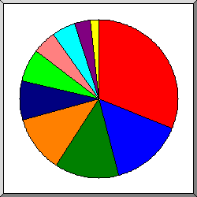
Поделено на сектора по количеству отказов.
http://innoedusys.uz/
https://duckduckgo.com/
https://www.google.com/
https://www.bing.com/
http://mail.innoedusys.uz/
http://www.innoedusys.uz/
http://www.innoedusys.uz/app/
https://www.yahoo.com/
http://innoedusys.uz/app/
http://mail.innoedusys.uz/app/
Список ссылающихся URLs, отсортировано по количеству отказов.
(Переход: Вверх | Основная Информация | Статистика по месяцам | Статистика по дням недели | Статистика по времени суток | Статистика по доменам | Статистика по организациям | Статистика по перенаправляющим ссылкам | Статистика отказов по ссылкам | Статистика по ссылающимся сайтам | Статистика по браузерам (подробная) | Статистика по браузерам (суммарная) | Статистика по операционным системам | Статистика по коду возврата | Статистика по размерам файлов | Статистика по типам файлов | Статистика по директориям | Статистика по запросам)
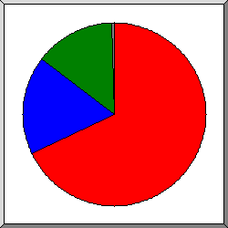
Поделено на сектора по количеству обращений.
http://innoedusys.uz/
http://www.innoedusys.uz/
http://mail.innoedusys.uz/
другое
Список ссылающихся сайтов, отсортировано по количеству обращений.
| запросы | сайт |
|---|---|
| 978 | http://innoedusys.uz/ |
| 252 | http://www.innoedusys.uz/ |
| 207 | http://mail.innoedusys.uz/ |
| 3 | https://www.bing.com/ |
| 2 | https://www.google.com/ |
(Переход: Вверх | Основная Информация | Статистика по месяцам | Статистика по дням недели | Статистика по времени суток | Статистика по доменам | Статистика по организациям | Статистика по перенаправляющим ссылкам | Статистика отказов по ссылкам | Статистика по ссылающимся сайтам | Статистика по браузерам (подробная) | Статистика по браузерам (суммарная) | Статистика по операционным системам | Статистика по коду возврата | Статистика по размерам файлов | Статистика по типам файлов | Статистика по директориям | Статистика по запросам)
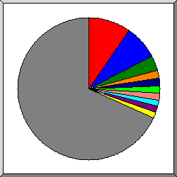
Поделено на сектора по количеству обращений к странице.
Mozilla/5.0 (l9scan/2.0.43e2935313e2833313e25343; +https://leakix.net)
Mozilla/5.0 (Windows NT 10.0; Win64; x64) AppleWebKit/537.36 (KHTML, like Gecko) Chrome/78.0.3904.108 Safari/537.36
Mozilla/5.0 (Windows NT 10.0; Win64; x64) AppleWebKit/537.36 (KHTML, like Gecko) Chrome/95.0.4638.69 Safari/537.36
Mozilla/5.0 (compatible; MSIE 10.0; Windows NT 6.1; Trident/6.0)
Mozilla/5.0 (Windows NT 10.0) AppleWebKit/537.36 (KHTML, like Gecko) Chrome/84.0.4147.105 Safari/537.36
Mozilla/5.0 (Windows NT 10.0; Win64; x64) AppleWebKit/537.36 (KHTML, like Gecko) Chrome/69.0.3497.100 Safari/537.36
Mozilla/5.0 (Windows NT 10.0; Win64; x64) AppleWebKit/537.36 (KHTML, like Gecko) Chrome/80.0.3987.149 Safari/537.36
Mozilla/5.0 (Windows NT 10.0; Win64; x64) AppleWebKit/537.36 (KHTML, like Gecko) Chrome/58.0.3029.110 Safari/537.3
Mozilla/5.0 (Windows NT 10.0; Win64; x64) AppleWebKit/537.36 (KHTML, like Gecko) Chrome/70.0.3538.110 Safari/537.36
Mozilla/5.0 (Windows NT 10.0; Win64; x64) AppleWebKit/537.36 (KHTML, like Gecko) Chrome/79.0.3945.79 Safari/537.36
другое
Показано первые 40 браузеров - по количеству обращений к странице, отсортировано по количеству обращений к странице.
| запросы | страниц | браузер |
|---|---|---|
| 222 | 49 | Mozilla/5.0 (l9scan/2.0.43e2935313e2833313e25343; +https://leakix.net) |
| 397 | 40 | Mozilla/5.0 (Windows NT 10.0; Win64; x64) AppleWebKit/537.36 (KHTML, like Gecko) Chrome/78.0.3904.108 Safari/537.36 |
| 139 | 17 | Mozilla/5.0 (Windows NT 10.0; Win64; x64) AppleWebKit/537.36 (KHTML, like Gecko) Chrome/95.0.4638.69 Safari/537.36 |
| 10 | 9 | Mozilla/5.0 (compatible; MSIE 10.0; Windows NT 6.1; Trident/6.0) |
| 11 | 9 | Mozilla/5.0 (Windows NT 10.0) AppleWebKit/537.36 (KHTML, like Gecko) Chrome/84.0.4147.105 Safari/537.36 |
| 11 | 8 | Mozilla/5.0 (Windows NT 10.0; Win64; x64) AppleWebKit/537.36 (KHTML, like Gecko) Chrome/69.0.3497.100 Safari/537.36 |
| 29 | 8 | Mozilla/5.0 (Windows NT 10.0; Win64; x64) AppleWebKit/537.36 (KHTML, like Gecko) Chrome/80.0.3987.149 Safari/537.36 |
| 14 | 7 | Mozilla/5.0 (Windows NT 10.0; Win64; x64) AppleWebKit/537.36 (KHTML, like Gecko) Chrome/58.0.3029.110 Safari/537.3 |
| 10 | 7 | Mozilla/5.0 (Windows NT 10.0; Win64; x64) AppleWebKit/537.36 (KHTML, like Gecko) Chrome/70.0.3538.110 Safari/537.36 |
| 24 | 7 | Mozilla/5.0 (Windows NT 10.0; Win64; x64) AppleWebKit/537.36 (KHTML, like Gecko) Chrome/79.0.3945.79 Safari/537.36 |
| 8 | 6 | Mozilla/5.0 (Windows NT 10.0; Win64; x64; rv:72.0) Gecko/20100101 Firefox/72.0 |
| 12 | 6 | Mozilla/5.0 (Windows NT 6.3; Win64; x64; rv:73.0) Gecko/20100101 Firefox/73.0 |
| 8 | 6 | Mozilla/5.0 (Macintosh; Intel Mac OS X 10_15_6) AppleWebKit/537.36 (KHTML, like Gecko) Chrome/84.0.4147.105 Safari/537.36 OPR/70.0.3728.95 |
| 9 | 6 | Mozilla/5.0 (Windows NT 10.0; Win64; x64) AppleWebKit/537.36 (KHTML, like Gecko) Chrome/79.0.3945.130 Safari/537.36 |
| 9 | 6 | Mozilla/5.0 (Windows NT 10.0; Win64; x64) AppleWebKit/537.36 (KHTML, like Gecko) Chrome/81.0.4044.129 Safari/537.36 |
| 10 | 6 | Mozilla/5.0 (X11; Linux i686; rv:79.0) Gecko/20100101 Firefox/79.0 |
| 8 | 6 | Mozilla/5.0 (Macintosh; Intel Mac OS X 10_15_6) AppleWebKit/537.36 (KHTML, like Gecko) Chrome/84.0.4147.125 Safari/537.36 |
| 7 | 5 | Mozilla/5.0 (Windows NT 6.1; Win64; x64) AppleWebKit/537.36 (KHTML, like Gecko) Chrome/79.0.3945.130 Safari/537.36 |
| 6 | 5 | Mozilla/5.0 (Windows NT 10.0; Win64; x64; rv:74.0) Gecko/20100101 Firefox/74.0 |
| 6 | 5 | Mozilla/5.0 (Windows NT 6.1; Win64; x64) AppleWebKit/537.36 (KHTML, like Gecko) Chrome/80.0.3987.149 Safari/537.36 |
| 7 | 5 | Mozilla/5.0 (Windows NT 10.0; Win64; x64) AppleWebKit/537.36 (KHTML, like Gecko) Chrome/79.0.3945.88 Safari/537.36 |
| 9 | 5 | Mozilla/5.0 (Windows NT 10.0; Win64; x64; rv:73.0) Gecko/20100101 Firefox/73.0 |
| 10 | 5 | Mozilla/5.0 (Windows NT 10.0; Win64; x64) AppleWebKit/537.36 (KHTML, like Gecko) Chrome/143.0.0.0 Safari/537.36 |
| 9 | 5 | Mozilla/5.0 (Windows NT 10.0; Win64; x64; rv:71.0) Gecko/20100101 Firefox/71.0 |
| 30 | 5 | Mozilla/5.0 (Windows NT 10.0; Win64; x64) AppleWebKit/537.36 (KHTML, like Gecko) Chrome/117.0.5938.132 Safari/537.36 |
| 7 | 5 | Mozilla/5.0 (Windows NT 6.1; Win64; x64) AppleWebKit/537.36 (KHTML, like Gecko) Chrome/58.0.3029.110 Safari/537.3 |
| 10 | 5 | Mozilla/5.0 (Windows NT 10.0) AppleWebKit/537.36 (KHTML, like Gecko) Chrome/72.0.3626.121 Safari/537.36 |
| 8 | 5 | Mozilla/5.0 (X11; Ubuntu; Linux x86_64; rv:79.0) Gecko/20100101 Firefox/79.0 |
| 11 | 5 | Mozilla/5.0 (Windows NT 10.0; Win64; x64; rv:76.0) Gecko/20100101 Firefox/76.0 |
| 6 | 5 | Mozilla/5.0 (Windows NT 6.1; Win64; x64) AppleWebKit/537.36 (KHTML, like Gecko) Chrome/78.0.3904.108 Safari/537.36 |
| 9 | 5 | Mozilla/5.0 (Windows NT 10.0; Win64; x64) AppleWebKit/537.36 (KHTML, like Gecko) Chrome/74.0.3729.157 Safari/537.36 |
| 12 | 5 | Mozilla/5.0 (Windows NT 10.0; Win64; x64; rv:75.0) Gecko/20100101 Firefox/75.0 |
| 7 | 4 | Mozilla/5.0 (Macintosh; Intel Mac OS X 10_15_7) AppleWebKit/537.36 (KHTML, like Gecko) Chrome/136.0.0.0 Safari/537.36 |
| 8 | 4 | Mozilla/5.0 (Windows NT 10.0; Win64; x64) AppleWebKit/537.36 (KHTML, like Gecko) Chrome/70.0.3538.77 Safari/537.36 |
| 8 | 4 | Mozilla/5.0 (Macintosh; Intel Mac OS X 10.15; rv:79.0) Gecko/20100101 Firefox/79.0 |
| 6 | 4 | Mozilla/5.0 (X11; Linux x86_64) AppleWebKit/537.36 (KHTML, like Gecko) Chrome/84.0.4147.105 Safari/537.36 |
| 6 | 4 | Mozilla/5.0 (Windows NT 10.0; Win64; x64; rv:79.0) Gecko/20100101 Firefox/79.0 |
| 4 | 4 | Mozilla/5.0 |
| 10 | 4 | Mozilla/5.0 (Windows NT 10.0; Win64; x64) AppleWebKit/537.36 (KHTML, like Gecko) Chrome/74.0.3729.169 Safari/537.36 |
| 12 | 4 | Mozilla/5.0 (Linux; Android 14; SM-S901B) AppleWebKit/537.36 (KHTML, like Gecko) Chrome/120.0.6099.280 Mobile Safari/537.36 OPR/80.4.4244.7786 |
| 6553 | 197 | [не распознано: 391 браузеров] |
(Переход: Вверх | Основная Информация | Статистика по месяцам | Статистика по дням недели | Статистика по времени суток | Статистика по доменам | Статистика по организациям | Статистика по перенаправляющим ссылкам | Статистика отказов по ссылкам | Статистика по ссылающимся сайтам | Статистика по браузерам (подробная) | Статистика по браузерам (суммарная) | Статистика по операционным системам | Статистика по коду возврата | Статистика по размерам файлов | Статистика по типам файлов | Статистика по директориям | Статистика по запросам)
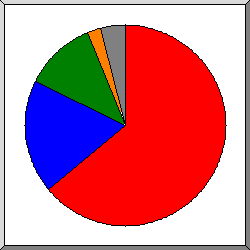
Поделено на сектора по количеству обращений к странице.
Safari
Firefox
Mozilla
MSIE
другое
Список браузеров на которые приходиться, как минимум 1 обращение к странице, отсортировано по количеству обращений к странице.
| N | запросы | страниц | браузер |
|---|---|---|---|
| 1 | 2093 | 324 | Safari |
| 1892 | 309 | Safari/537 | |
| 77 | 7 | Safari/604 | |
| 1 | 1 | Safari/7534 | |
| 1 | 1 | Safari/600 | |
| 2 | 1 | Safari/530 | |
| 2 | 1 | Safari/531 | |
| 99 | 1 | Safari/605 | |
| 2 | 1 | Safari/533 | |
| 2 | 1 | Safari/534 | |
| 2 | 1 | Safari/525 | |
| 2 | 368 | 93 | Firefox |
| 52 | 27 | Firefox/79 | |
| 21 | 11 | Firefox/73 | |
| 8 | 6 | Firefox/72 | |
| 9 | 5 | Firefox/71 | |
| 6 | 5 | Firefox/74 | |
| 12 | 5 | Firefox/75 | |
| 11 | 5 | Firefox/76 | |
| 5 | 4 | Firefox/77 | |
| 9 | 4 | Firefox/67 | |
| 101 | 3 | Firefox/47 | |
| 3 | 255 | 59 | Mozilla |
| 2 | 1 | Mozilla/1 | |
| 4 | 14 | 11 | MSIE |
| 10 | 9 | MSIE/10 | |
| 3 | 1 | MSIE/9 | |
| 1 | 1 | MSIE/7 | |
| 5 | 12 | 4 | Opera |
| 11 | 4 | Opera/9 | |
| 6 | 308 | 2 | Netscape (compatible) |
| 7 | 3 | 2 | Konqueror |
| 2 | 2 | Konqueror/3 | |
| 8 | 2 | 2 | NokiaN73-1 |
| 2 | 2 | NokiaN73-1/3 | |
| 9 | 30 | 2 | Hello from Palo Alto Networks, find out more about our scans in https: |
| 30 | 2 | Hello from Palo Alto Networks, find out more about our scans in https://docs-cortex | |
| 10 | 1 | 1 | FAST-WebCrawler |
| 1 | 1 | FAST-WebCrawler/3 | |
| 11 | 1 | 1 | fasthttp |
| 12 | 1 | 1 | SonyEricssonT610 |
| 1 | 1 | SonyEricssonT610/R201 | |
| 13 | 1 | 1 | ELinks (0.4.3; NetBSD 3.0.2PATCH sparc64; 141x19) |
| 14 | 1 | 1 | Firebird |
| 1 | 1 | Firebird/0 | |
| 15 | 1 | 1 | PragmaticSecurity-Scanner |
| 1 | 1 | PragmaticSecurity-Scanner/2 | |
| 16 | 1 | 1 | BlackBerry7100i |
| 1 | 1 | BlackBerry7100i/4 | |
| 17 | 1 | 1 | Screaming Frog SEO Spider |
| 1 | 1 | Screaming Frog SEO Spider/8 | |
| 4599 | 0 | [не распознано: 22 браузеров] |
(Переход: Вверх | Основная Информация | Статистика по месяцам | Статистика по дням недели | Статистика по времени суток | Статистика по доменам | Статистика по организациям | Статистика по перенаправляющим ссылкам | Статистика отказов по ссылкам | Статистика по ссылающимся сайтам | Статистика по браузерам (подробная) | Статистика по браузерам (суммарная) | Статистика по операционным системам | Статистика по коду возврата | Статистика по размерам файлов | Статистика по типам файлов | Статистика по директориям | Статистика по запросам)
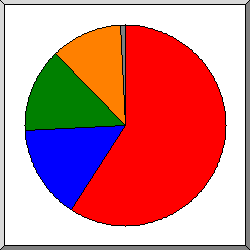
Поделено на сектора по количеству обращений к странице.
Windows
Unix
Неизвестная ОС
Macintosh
другое
Список операционных систем, отсортировано по количеству обращений к странице.
| N | запросы | страниц | ОС |
|---|---|---|---|
| 1 | 1528 | 299 | Windows |
| 1286 | 244 | Windows NT | |
| 239 | 55 | Неизвестная Windows-система | |
| 1 | 0 | Windows 95 | |
| 2 | 0 | Windows XP | |
| 2 | 551 | 77 | Unix |
| 533 | 72 | Linux | |
| 7 | 3 | BSD | |
| 1 | 1 | SunOS | |
| 10 | 1 | Другие Unix-системы | |
| 3 | 5198 | 69 | Неизвестная ОС |
| 4 | 347 | 58 | Macintosh |
| 5 | 64 | 2 | роботы |
| 6 | 4 | 2 | Symbian OS |
(Переход: Вверх | Основная Информация | Статистика по месяцам | Статистика по дням недели | Статистика по времени суток | Статистика по доменам | Статистика по организациям | Статистика по перенаправляющим ссылкам | Статистика отказов по ссылкам | Статистика по ссылающимся сайтам | Статистика по браузерам (подробная) | Статистика по браузерам (суммарная) | Статистика по операционным системам | Статистика по коду возврата | Статистика по размерам файлов | Статистика по типам файлов | Статистика по директориям | Статистика по запросам)
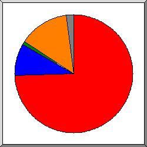
Поделено на сектора по количеству обращений.
200 OK
302 Document found elsewhere
304 Not modified since last retrieval
404 Document not found
другое
Список кодов возврата, отсортированный по порядковым номерам.
| запросы | код статус |
|---|---|
| 10772 | 200 OK |
| 8 | 206 Partial content |
| 81 | 301 Document moved permanently |
| 1259 | 302 Document found elsewhere |
| 145 | 304 Not modified since last retrieval |
| 3 | 400 Bad request |
| 1987 | 404 Document not found |
| 75 | 415 Unsupported media type |
| 4 | 500 Internal server error |
| 121 | 5xx [Miscellaneous server errors] |
(Переход: Вверх | Основная Информация | Статистика по месяцам | Статистика по дням недели | Статистика по времени суток | Статистика по доменам | Статистика по организациям | Статистика по перенаправляющим ссылкам | Статистика отказов по ссылкам | Статистика по ссылающимся сайтам | Статистика по браузерам (подробная) | Статистика по браузерам (суммарная) | Статистика по операционным системам | Статистика по коду возврата | Статистика по размерам файлов | Статистика по типам файлов | Статистика по директориям | Статистика по запросам)
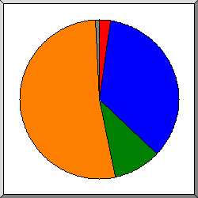
Поделено на сектора по количеству обращений.
0
11B- 100B
1kB- 10kB
10kB-100kB
другое
| размер | запросы | %байт |
|---|---|---|
| 0 | 251 | |
| 1B- 10B | 0 | |
| 11B- 100B | 3802 | 0,18% |
| 101B- 1kB | 83 | 0,01% |
| 1kB- 10kB | 1055 | 3,64% |
| 10kB-100kB | 5734 | 96,18% |
(Переход: Вверх | Основная Информация | Статистика по месяцам | Статистика по дням недели | Статистика по времени суток | Статистика по доменам | Статистика по организациям | Статистика по перенаправляющим ссылкам | Статистика отказов по ссылкам | Статистика по ссылающимся сайтам | Статистика по браузерам (подробная) | Статистика по браузерам (суммарная) | Статистика по операционным системам | Статистика по коду возврата | Статистика по размерам файлов | Статистика по типам файлов | Статистика по директориям | Статистика по запросам)
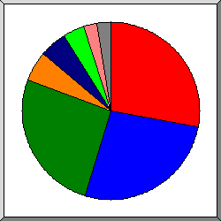
Поделено на сектора по суммарному трафику.
.css [Cascading Style Sheets]
.js [JavaScript code]
.php [PHP]
[директории]
[без расширения]
.xml
.cgi [CGI scripts]
другое
Список расширений на которые приходиться, как минимум 0,1% трафика, отсортировано по суммарному трафику.
| запросы | %байт | расширение |
|---|---|---|
| 552 | 27,96% | .css [Cascading Style Sheets] |
| 600 | 26,69% | .js [JavaScript code] |
| 2951 | 25,91% | .php [PHP] |
| 637 | 5,52% | [директории] |
| 4680 | 5,09% | [без расширения] |
| 456 | 3,95% | .xml |
| 501 | 2,43% | .cgi [CGI scripts] |
| 80 | 0,70% | .env |
| 178 | 0,28% | .txt [Plain text] |
| 37 | 0,19% | .json |
| 13 | 0,11% | .backup |
| 12 | 0,11% | .bak |
| 228 | 1,06% | [не распознано: 46 расширений] |
(Переход: Вверх | Основная Информация | Статистика по месяцам | Статистика по дням недели | Статистика по времени суток | Статистика по доменам | Статистика по организациям | Статистика по перенаправляющим ссылкам | Статистика отказов по ссылкам | Статистика по ссылающимся сайтам | Статистика по браузерам (подробная) | Статистика по браузерам (суммарная) | Статистика по операционным системам | Статистика по коду возврата | Статистика по размерам файлов | Статистика по типам файлов | Статистика по директориям | Статистика по запросам)
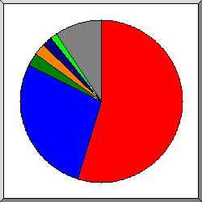
Поделено на сектора по суммарному трафику.
/build/
[корневой каталог]
/cgi-sys/
/wp-includes/
/wp-content/
/wp-admin/
другое
Список директорий на которые приходиться, как минимум 0,01% трафика, отсортировано по суммарному трафику.
| запросы | %байт | директория |
|---|---|---|
| 1144 | 54,53% | /build/ |
| 3847 | 27,83% | [корневой каталог] |
| 531 | 2,60% | /cgi-sys/ |
| 263 | 2,32% | /wp-includes/ |
| 234 | 2,06% | /wp-content/ |
| 156 | 1,38% | /wp-admin/ |
| 96 | 0,85% | /login/ |
| 3680 | 0,39% | /.well-known/ |
| 34 | 0,30% | /wordpress/ |
| 31 | 0,27% | /wp/ |
| 28 | 0,25% | /blog/ |
| 26 | 0,23% | /site/ |
| 26 | 0,23% | /web/ |
| 26 | 0,23% | /.git/ |
| 25 | 0,22% | /test/ |
| 25 | 0,22% | /cms/ |
| 22 | 0,19% | /shop/ |
| 22 | 0,19% | /admin/ |
| 39 | 0,19% | /api/ |
| 21 | 0,19% | /wp1/ |
| 20 | 0,18% | /2019/ |
| 19 | 0,17% | /app/ |
| 16 | 0,14% | /media/ |
| 15 | 0,13% | /sito/ |
| 15 | 0,13% | /wp2/ |
| 15 | 0,13% | /news/ |
| 15 | 0,13% | /website/ |
| 15 | 0,13% | /git/ |
| 15 | 0,12% | http:// |
| 14 | 0,12% | /2018/ |
| 14 | 0,12% | /cgi-bin/ |
| 13 | 0,11% | /dev/ |
| 13 | 0,11% | /images/ |
| 13 | 0,11% | /backup/ |
| 23 | 0,11% | /v2/ |
| 12 | 0,11% | /assets/ |
| 12 | 0,11% | /staging/ |
| 11 | 0,10% | /mail/ |
| 10 | 0,09% | /backend/ |
| 9 | 0,08% | /modules/ |
| 9 | 0,08% | /debug/ |
| 8 | 0,07% | /index/ |
| 7 | 0,06% | /s/ |
| 8 | 0,06% | /wp-json/ |
| 7 | 0,06% | /src/ |
| 7 | 0,06% | /frontend/ |
| 7 | 0,06% | /2021/ |
| 7 | 0,06% | /css/ |
| 7 | 0,06% | /public/ |
| 7 | 0,06% | /2020/ |
| 7 | 0,06% | /feed/ |
| 6 | 0,05% | /ecp/ |
| 6 | 0,05% | /themes/ |
| 6 | 0,05% | /.vscode/ |
| 6 | 0,05% | /@vite/ |
| 6 | 0,05% | /telescope/ |
| 6 | 0,05% | /actuator/ |
| 5 | 0,04% | /templates/ |
| 5 | 0,04% | /.aws/ |
| 5 | 0,04% | /console/ |
| 4 | 0,04% | /logs/ |
| 4 | 0,04% | /tmp/ |
| 4 | 0,04% | /prod/ |
| 4 | 0,04% | /sites/ |
| 4 | 0,04% | /files/ |
| 4 | 0,04% | /wk/ |
| 4 | 0,04% | /core/ |
| 7 | 0,03% | /v3/ |
| 3 | 0,03% | /static/ |
| 3 | 0,03% | /temp/ |
| 3 | 0,03% | /function/ |
| 3 | 0,03% | /vendor/ |
| 3 | 0,03% | /production/ |
| 3 | 0,03% | /example/ |
| 3 | 0,03% | /joomla/ |
| 3 | 0,03% | /sample/ |
| 3 | 0,03% | /html/ |
| 3 | 0,03% | /main/ |
| 3 | 0,03% | /root/ |
| 3 | 0,03% | /docs/ |
| 3 | 0,03% | /new/ |
| 3 | 0,03% | /old/ |
| 3 | 0,03% | /www/ |
| 3 | 0,03% | /v1/ |
| 3 | 0,03% | /dist/ |
| 3 | 0,03% | /administrator/ |
| 3 | 0,03% | /autoload_classmap/ |
| 3 | 0,03% | /drupal/ |
| 3 | 0,03% | /upload/ |
| 3 | 0,03% | /beta/ |
| 3 | 0,03% | /update/ |
| 3 | 0,03% | /_git/ |
| 3 | 0,03% | /js/ |
| 3 | 0,03% | /components/ |
| 3 | 0,03% | /about/ |
| 3 | 0,03% | /sendgrid/ |
| 3 | 0,03% | /ALFA_DATA/ |
| 3 | 0,03% | /phpinfo/ |
| 2 | 0,02% | /mailer/ |
| 2 | 0,02% | /plugins/ |
| 2 | 0,02% | /fonts/ |
| 2 | 0,02% | /email/ |
| 2 | 0,02% | /Requests/ |
| 2 | 0,02% | /_profiler/ |
| 2 | 0,02% | /uploads/ |
| 2 | 0,02% | /___proxy_subdomain_whm/ |
| 2 | 0,02% | /config/ |
| 2 | 0,02% | /application/ |
| 2 | 0,02% | /framework/ |
| 2 | 0,02% | /install/ |
| 2 | 0,02% | /file/ |
| 77 | 0,44% | [не распознано: 54 директорий] |
(Переход: Вверх | Основная Информация | Статистика по месяцам | Статистика по дням недели | Статистика по времени суток | Статистика по доменам | Статистика по организациям | Статистика по перенаправляющим ссылкам | Статистика отказов по ссылкам | Статистика по ссылающимся сайтам | Статистика по браузерам (подробная) | Статистика по браузерам (суммарная) | Статистика по операционным системам | Статистика по коду возврата | Статистика по размерам файлов | Статистика по типам файлов | Статистика по директориям | Статистика по запросам)
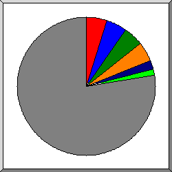
Поделено на сектора по количеству обращений.
/build/assets/app-CiZ6hk-B.js
/login
/build/assets/app-Bt4dxBOZ.css
/cgi-sys/suspendedpage.cgi
/
/robots.txt
другое
Список файлов на которые приходиться, как минимум 20 запросов, отсортировано по количеству обращений.
| запросы | %байт | последнее время | файл |
|---|---|---|---|
| 546 | 25,44% | 20 июн 26 00:28 | /build/assets/app-CiZ6hk-B.js |
| 516 | 1,51% | 20 июн 26 00:28 | /login |
| 512 | 27,25% | 20 июн 26 00:28 | /build/assets/app-Bt4dxBOZ.css |
| 501 | 2,43% | 30 июн 26 15:47 | /cgi-sys/suspendedpage.cgi |
| 12 | 0,07% | 28 июн 26 15:27 | /cgi-sys/suspendedpage.cgi?p= |
| 10 | 0,06% | 28 июн 26 15:28 | /cgi-sys/suspendedpage.cgi? |
| 234 | 2,04% | 29 июн 26 19:32 | / |
| 153 | 0,07% | 20 июн 26 17:47 | /robots.txt |
| 96 | 0,02% | 20 июн 26 00:28 | /favicon.ico |
| 51 | 1,18% | 13 июн 26 02:48 | /build/assets/app-CiZ6hk-B.js.pagespeed.ce.vj7eJ8whWE.js |
| 50 | 0,14% | 17 июн 26 06:56 | /register |
| 49 | 0,11% | 17 июн 26 06:56 | /forgot-password |
| 31 | 0,27% | 29 июн 26 20:28 | /wp-content/plugins/hellopress/wp_filemanager.php |
| 31 | 0,62% | 13 июн 26 02:48 | /build/assets/A.app-Bt4dxBOZ.css.pagespeed.cf.sMYYIQVILj.css |
| 25 | 0,22% | 29 июн 26 20:28 | /this_is_a_new_hello_world.php |
| 23 | 0,20% | 28 июн 26 04:27 | /xmlrpc.php |
| 21 | 0,19% | 28 июн 26 04:27 | /xmlrpc.php?rsd |
| 23 | 0,20% | 11 мая 26 00:18 | /.git/config |
| 23 | 0,20% | 28 июн 26 04:27 | /site/wp-includes/wlwmanifest.xml |
| 22 | 0,19% | 28 июн 26 04:27 | /shop/wp-includes/wlwmanifest.xml |
| 22 | 0,19% | 28 июн 26 04:27 | /web/wp-includes/wlwmanifest.xml |
| 22 | 0,19% | 28 июн 26 04:27 | /cms/wp-includes/wlwmanifest.xml |
| 22 | 0,19% | 28 июн 26 04:27 | /test/wp-includes/wlwmanifest.xml |
| 21 | 0,19% | 28 июн 26 04:27 | /wp1/wp-includes/wlwmanifest.xml |
| 21 | 0,19% | 28 июн 26 04:27 | /blog/wp-includes/wlwmanifest.xml |
| 21 | 0,19% | 25 июн 26 16:04 | /wordpress/wp-includes/wlwmanifest.xml |
| 20 | 0,18% | 28 июн 26 04:27 | /2019/wp-includes/wlwmanifest.xml |
| 7890 | 36,58% | 29 июн 26 20:30 | [не распознано: 5 128 файлов] |